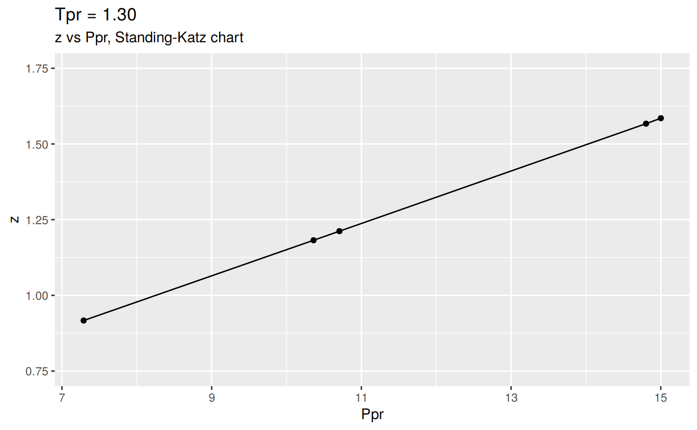

How the data was collected
The Standing-Katz (SK) chart data is read directly from a scanned figure of the original plot drawn by Standing and Katz in 1951.
The software used to digitize the data is graphClick for the operating system osX by Apple. This software has been tested and qualified by scholars working on a similar task of digitizing data.
Each one of the SK chart curves has been digitized. There are some curves where more points were taken due to the curvature. Other curves are almost linear and few points were necessary to define the curve.
Saving the Standing-Katz curves
If you feel you can add a Standing-Katz chart with higher resolution and improve the work of this package, you can do so. Just keep in mind certain convention to name the text files. Let’s see how the curves were saved for this package.
We invoke the function listStandingKatzCurves() to list all the Standing-Katz curve data that has been digitized. See the R code chunk below:
[1] "sk_hp_tpr_105.txt" "sk_hp_tpr_110.txt" "sk_hp_tpr_120.txt"
[4] "sk_hp_tpr_130.txt" "sk_hp_tpr_140.txt" "sk_hp_tpr_150.txt"
[7] "sk_hp_tpr_170.txt" "sk_hp_tpr_200.txt" "sk_hp_tpr_220.txt"
[10] "sk_hp_tpr_240.txt" "sk_hp_tpr_260.txt" "sk_hp_tpr_300.txt"
[13] "sk_lp_tpr_105.txt" "sk_lp_tpr_110.txt" "sk_lp_tpr_120.txt"
[16] "sk_lp_tpr_130.txt" "sk_lp_tpr_140.txt" "sk_lp_tpr_150.txt"
[19] "sk_lp_tpr_160.txt" "sk_lp_tpr_170.txt" "sk_lp_tpr_180.txt"
[22] "sk_lp_tpr_190.txt" "sk_lp_tpr_200.txt" "sk_lp_tpr_220.txt"
[25] "sk_lp_tpr_240.txt" "sk_lp_tpr_260.txt" "sk_lp_tpr_280.txt"
[28] "sk_lp_tpr_300.txt"Note that the files follow this convention:
sk_: Sanding-Katz
hp: high pressure range
lp: low pressure range
tpr: pseudo-reduced tempereture
nnn: a three digit number representing the curve by the TprNow that we know the meaning of the name of digitized curve. we could only list then the files that contain data only in the ‘high pressure’ (hp) range:
[1] "sk_hp_tpr_105.txt" "sk_hp_tpr_110.txt" "sk_hp_tpr_120.txt"
[4] "sk_hp_tpr_130.txt" "sk_hp_tpr_140.txt" "sk_hp_tpr_150.txt"
[7] "sk_hp_tpr_170.txt" "sk_hp_tpr_200.txt" "sk_hp_tpr_220.txt"
[10] "sk_hp_tpr_240.txt" "sk_hp_tpr_260.txt" "sk_hp_tpr_300.txt"For the low-pressure Ppr range:
[1] "sk_lp_tpr_105.txt" "sk_lp_tpr_110.txt" "sk_lp_tpr_120.txt"
[4] "sk_lp_tpr_130.txt" "sk_lp_tpr_140.txt" "sk_lp_tpr_150.txt"
[7] "sk_lp_tpr_160.txt" "sk_lp_tpr_170.txt" "sk_lp_tpr_180.txt"
[10] "sk_lp_tpr_190.txt" "sk_lp_tpr_200.txt" "sk_lp_tpr_220.txt"
[13] "sk_lp_tpr_240.txt" "sk_lp_tpr_260.txt" "sk_lp_tpr_280.txt"
[16] "sk_lp_tpr_300.txt"Reading and plotting the Standing-Katz chart data
The SK chart data once is read from the curves and saved on text files, it can read from R and viewed, plotted or saved y using the function getStandingKatzCurve(). The header of function looks like this:
getStandingKatzCurve <- function(tpr = 1.3, pprRange = "lp",
tolerance = 0.01,
toView = TRUE, toSave = TRUE, toPlot = TRUE)
{ more code }The user should supply at least the pseudo-reduced temperatureor \(T_{pr}\) to retrieve the points from the SK chart for that particular temperature. What the user will obtain is a dataset of \(P_{pr}\) vs \(z\).
Here we are calling for the curve at \(T_{pr}\) = 1.30, We will only plot it at this time:

In a similar manner we could plot the SK curve at \(T_{pr}\) = 1.3 but at the high pressure range or hp. This is the lower part of the chart with the scale from 7.0 to 15.
We have to specify that we want the high pressure range with hp as shown below:

We could change the Y scale of the plot to accomadate the high `z`` values:


More Examples
| Ppr | z | isNear | Ppr_near | diff |
|---|---|---|---|---|
| 7.290 | 0.917 | TRUE | 7.300 | -0.010 |
| 10.361 | 1.182 | FALSE | 10.361 | 0.000 |
| 10.707 | 1.212 | TRUE | 10.700 | 0.007 |
| 14.803 | 1.567 | TRUE | 14.800 | 0.003 |
| 15.001 | 1.585 | TRUE | 15.000 | 0.001 |
The table show us few rows of the dataset at \(T_{pr}\) = 1.3 but also some columns -or variables. \(P_{pr}\) and \(z\) are self-explanatory. The three other columns deserve an explanation:
isNear: how close is the digitized point to the grid (1/10th)
Ppr_near: what is the value of the nearest grid value to the point
diff: the difference between the Ppr of the point read and the grid
Getting tables for multiple pseudo-reduced pressures (Tpr)
We will choose not to plot, save ot view any of the results at this time. We limit to obtain the z vs. Ppr data at given \(T_{pr}\) values in a vector.
library(zFactor)
library(tibble)
tpr <- c(1.05, 1.3, 1.5)
tpr_li <- lapply(tpr, getStandingKatzData, pprRange = 'lp')
names(tpr_li) <- tpr
tibble(tpr_li)# A tibble: 3 x 1
tpr_li
<named list>
1 <df[,5] [52 × 5]>
2 <df[,5] [36 × 5]>
3 <df[,5] [37 × 5]># A tibble: 52 x 5
Ppr z isNear Ppr_near diff
<dbl> <dbl> <lgl> <dbl> <dbl>
1 0.204 0.937 TRUE 0.2 4.00e- 3
2 0.3 0.905 TRUE 0.3 -5.55e-17
3 0.405 0.866 TRUE 0.4 5.00e- 3
4 0.504 0.829 TRUE 0.5 4.00e- 3
5 0.602 0.79 TRUE 0.6 2.00e- 3
6 0.7 0.748 TRUE 0.7 -1.11e-16
7 1 0.589 TRUE 1 0.
8 1.20 0.44 TRUE 1.2 3.00e- 3
9 1.30 0.35 TRUE 1.3 10.00e- 4
10 1.33 0.319 FALSE 1.33 0.
# … with 42 more rows# A tibble: 36 x 5
Ppr z isNear Ppr_near diff
<dbl> <dbl> <lgl> <dbl> <dbl>
1 0.201 0.967 TRUE 0.2 1.00e- 3
2 0.302 0.95 TRUE 0.3 2.00e- 3
3 0.401 0.935 TRUE 0.4 1.00e- 3
4 0.504 0.916 TRUE 0.5 4.00e- 3
5 0.6 0.901 TRUE 0.6 -1.11e-16
6 0.804 0.868 TRUE 0.8 4.00e- 3
7 1.00 0.835 TRUE 1 2.00e- 3
8 1.20 0.804 TRUE 1.2 2.00e- 3
9 1.30 0.788 TRUE 1.3 3.00e- 3
10 1.50 0.756 TRUE 1.5 3.00e- 3
# … with 26 more rows# A tibble: 37 x 5
Ppr z isNear Ppr_near diff
<dbl> <dbl> <lgl> <dbl> <dbl>
1 0.202 0.978 TRUE 0.2 0.002
2 0.303 0.967 TRUE 0.3 0.00300
3 0.404 0.958 TRUE 0.4 0.004
4 0.506 0.948 TRUE 0.5 0.006
5 0.701 0.929 TRUE 0.7 0.001000
6 0.801 0.919 TRUE 0.8 0.001
7 1 0.9 TRUE 1 0
8 1.30 0.875 TRUE 1.3 0.004
9 1.50 0.859 TRUE 1.5 0.00500
10 1.80 0.836 TRUE 1.8 0.00300
# … with 27 more rowsNote that we have just retrieved the z vs. Ppr data for three Tpr curves with one command. That the power of the
applyfunctions family.
Select a table for a given Tpr curve
Since the function getStandingKatzData returns a list of dataframes if we supply a vector of Tpr curves, we could select one of those tables by specifying the Tpr. In this example, we will retrieve the table for Tpr =1.3` and show the first 10 rows:
Ppr z isNear Ppr_near diff
1 0.201 0.967 TRUE 0.2 1.000000e-03
2 0.302 0.950 TRUE 0.3 2.000000e-03
3 0.401 0.935 TRUE 0.4 1.000000e-03
4 0.504 0.916 TRUE 0.5 4.000000e-03
5 0.600 0.901 TRUE 0.6 -1.110223e-16
6 0.804 0.868 TRUE 0.8 4.000000e-03
7 1.002 0.835 TRUE 1.0 2.000000e-03
8 1.202 0.804 TRUE 1.2 2.000000e-03
9 1.303 0.788 TRUE 1.3 3.000000e-03
10 1.503 0.756 TRUE 1.5 3.000000e-03
Get a table/matrix of z values for medium range of Tpr curves
Let’s say we want to take a look at the z values Standing-Katz chart at specific sets of pseudo-reduced pressure \(P_{pr}\) and pseudo-reduced temperatures \(T_{pr}\). We use the function getStandingKatzMatrix() and provide the Ppr and Tpr vectors.
z values for the medium range of Tpr curves
library(zFactor)
tpr_vec <- c(1.4, 1.5, 1.6, 1.7, 1.8, 1.9)
ppr_vec <- c(0.5, 1.5, 2.5, 3.5, 4.5, 5.5, 6.5)
getStandingKatzMatrix(ppr_vector = ppr_vec, tpr_vector = tpr_vec) 0.5 1.5 2.5 3.5 4.5 5.5 6.5
1.40 0.936 0.816 0.727 0.705 0.734 0.792 0.865
1.50 0.948 0.859 0.794 0.770 0.790 0.836 0.892
1.60 0.959 0.888 0.839 0.816 0.829 0.868 0.918
1.70 0.968 0.914 0.876 0.857 0.864 0.897 0.942
1.80 0.974 0.933 0.905 0.891 0.901 0.929 0.967
1.90 0.978 0.945 0.924 0.916 0.924 0.949 0.985Note that these values are not interpolated; they are raw values read from the Standing-Katz chart.
NOTE
> In this case we could form a pretty nice matrix of z values because we know beforehand that the values of Ppr are common to the given Tpr curves. What does this mean?
This means that we digitized points at exactly these Ppr values 0.5, 1.5, 2.5, 3.5, 4.5, 5.5, 6.5 for these Tpr curves 1.3, 1.5, 1.7, 2.0. We may not be so lucky in creating such a pretty nice looking matrix unless we take care of digitizing the Tpr curves at common Ppr values. It will always be better to digitized points that are over the 1/10th division of the Standing-Katz grid.
What about the low range Tpr?
library(zFactor)
tpr_vec <- c(1.05, 1.1, 1.2, 1.3)
ppr_vec <- c(0.5, 1.5, 2.5, 3.5, 4.5, 5.5, 6.5)
getStandingKatzMatrix(ppr_vector = ppr_vec, tpr_vector = tpr_vec) 0.5 1.5 2.5 3.5 4.5 5.5 6.5
1.05 0.829 0.253 0.343 0.471 0.598 0.727 0.846
1.10 0.854 0.426 0.393 0.500 0.615 0.729 0.841
1.20 0.893 0.657 0.519 0.565 0.650 0.741 0.841
1.30 0.916 0.756 0.638 0.633 0.684 0.759 0.844
Or the high range region of Tpr
library(zFactor)
tpr_vec <- c(2.0, 2.2, 2.4, 2.6, 2.8, 3.0)
ppr_vec <- c(0.5, 1.5, 2.5, 3.5, 4.5, 5.5, 6.0)
getStandingKatzMatrix(ppr_vector = ppr_vec, tpr_vector = tpr_vec) 0.5 1.5 2.5 3.5 4.5 5.5 6
2.00 0.982 0.956 0.941 0.937 0.945 0.969 0.986
2.20 0.989 0.973 0.963 0.963 0.976 1.000 1.014
2.40 0.993 0.984 0.980 0.983 0.999 1.023 1.036
2.60 0.997 0.994 0.994 1.000 1.016 1.038 1.050
2.80 0.999 1.002 1.008 1.016 1.030 1.049 1.059
3.00 1.002 1.009 1.018 1.029 1.041 1.056 1.065
Smaller sample of z
If a smaller sample is required, change the vectors:
library(zFactor)
tpr_vec <- c(1.1, 1.2)
ppr_vec <- c(1, 2, 3, 4, 5, 6)
getStandingKatzMatrix(ppr_vector = ppr_vec, tpr_vector = tpr_vec,
pprRange = "lp") 1 2 3 4 5 6
1.10 0.669 0.369 0.440 0.557 0.673 0.784
1.20 0.779 0.554 0.534 0.607 0.695 0.789Again. We knew that there were two
Pprpoints at theTprsupplied.
Now, what happens if you guess the Ppr values and they are not found in the digitized file? R will throw an error:
Ppr values may not be digitized at this Tprlibrary(zFactor)
tpr_vec <- c(1.2)
ppr_vec <- c(8.3, 10)
getStandingKatzMatrix(ppr_vector = ppr_vec, tpr_vector = tpr_vec,
pprRange = "hp")Error in getStandingKatzMatrix(ppr_vector = ppr_vec, tpr_vector = tpr_vec, : Ppr values may not be digitized at this Tpr
Getting all Ppr digitized values for a Tpr
If we don’t know what Ppr values have been exactly digitized for a Tpr curve, then we just pull all the Ppr points. In this example, we will work with the hp or high pressure Ppr:
7.289 8.6 10.3 10.6 11.9 13.5 14.6 14.9 15
[1,] 0.922 1.045 1.203 1.231 1.352 1.501 1.605 1.633 1.642You can see why were getting the error above; there is no digitized point at
Ppr = 8.3orPpr = 10. Now, let’s try at 8.6 and 15.
library(zFactor)
tpr_vec <- c(1.2)
ppr_vec <- c(8.6, 10.3, 15)
getStandingKatzMatrix(ppr_vector = ppr_vec, tpr_vector = tpr_vec,
pprRange = "hp") 8.6 10.3 15
1.20 1.045 1.203 1.642
Get one z point for a Ppr at a curve Tpr
library(zFactor)
asked_tpr <- 1.5
asked_ppr <- 2.5
tpr_vec <- c(asked_tpr)
res_li <- lapply(tpr_vec, getStandingKatzData, pprRange = 'lp')
names(res_li) <- tpr_vec
asked_tpr_str <- as.character(asked_tpr)
df <- res_li[[asked_tpr_str]]
df[which(res_li[[asked_tpr_str]]["Ppr_near"] == asked_ppr), "z"][1] 0.794
Concatenating Tpr tables
library(zFactor)
library(data.table)
tpr <- c(1.05, 1.1, 1.2)
tpr_li <- lapply(tpr, getStandingKatzData, pprRange = 'lp')
names(tpr_li) <- tpr
common <- rbindlist(tpr_li, idcol = TRUE)
common .id Ppr z isNear Ppr_near diff
1: 1.05 0.204 0.937 TRUE 0.200 4.000000e-03
2: 1.05 0.300 0.905 TRUE 0.300 -5.551115e-17
3: 1.05 0.405 0.866 TRUE 0.400 5.000000e-03
4: 1.05 0.504 0.829 TRUE 0.500 4.000000e-03
5: 1.05 0.602 0.790 TRUE 0.600 2.000000e-03
---
193: 1.2 7.100 0.901 TRUE 7.100 -8.881784e-16
194: 1.2 7.355 0.926 FALSE 7.355 0.000000e+00
195: 1.2 7.500 0.941 TRUE 7.500 0.000000e+00
196: 1.2 7.901 0.980 TRUE 7.900 1.000000e-03
197: 1.2 8.001 0.990 TRUE 8.000 1.000000e-03